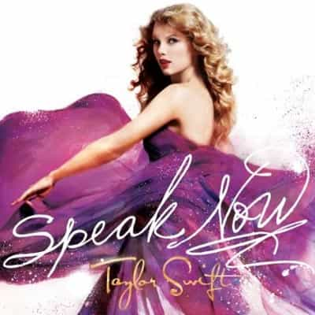

In a recent interview with Maxim Magazine, Taylor Swift gave a strong endorsement for feminism:
“Honestly, I didn’t have an accurate definition of feminism when I was younger. I didn’t quite see all the ways that feminism is vital to growing up in the world we live in. I think that when I used to say, Oh, feminism’s not really on my radar, it was because when I was just seen as a kid, I wasn’t as threatening. I didn’t see myself being held back until I was a woman. Or the double standards in headlines, the double standards in the way stories are told, the double standards in the way things are perceived. A man writing about his feelings from a vulnerable place is brave; a woman writing about her feelings from a vulnerable place is oversharing or whining. Misogyny is ingrained in people from the time they are born. So to me, feminism is probably the most important movement that you could embrace, because it’s just basically another word for equality.”
What a strong voice for women! As the most powerful person in pop , the 6th most powerful leader in the world, she is highly respected—many industry leaders have lauded her as a genius. Taylor is really leading the way to empowering, women right? The dirty truth is her feminist rhetoric is hollow and disingenuous because…
Let’s take a look at the production credits for her latest album 1989.
Executive Producer: Max Martin
82% of musicians Taylor hired to make 1989 were men. Only 18% women. Her how about her earlier album Speak Now?
Executive Producer: Nathan Chapman
A staggering 88% of her production staff were men, only 12% were women.
I guess feminism isn’t so “vital” in the production of Taylor’s records, eh? So long as women buy her records she can let the professionals (men) handle the technical details. This is blatant hypocrisy, as Taylor Swift has voraciously espoused women’s rights over the loudspeaker.
“There’s a special place in hell for women who don’t help other women” –Taylor Swift, 2013.
Maybe I’m just cherry-picking faults. Since Taylor believes women are as smart as men, SURELY some of her other albums featured women in prominent roles… right?
Nope. I looked. It almost seems like Taylor doesn’t trust female producers to work on her albums. Every single executive producer has been a man, with four out of five other roles also going to men.
Her actions are very different from what she preaches to her fans. If we look deeper into her music videos, the hypocrisy becomes even more apparent.
That’s 100% male directors for her music videos. 32 for 32. Who is the one holding back women now? If Taylor Swift was a college (or any other organization), there’d be widespread protests of sexism and misogyny.
If a woman worth $200,000,000 won’t hire a female director, who will? The fact that she can rationalize this in her mind shows how delusional her thinking is.
You might say “well those men didn’t have to deal with the adversity and sexism normal women have to deal with!” The reality is that the upper echelon of music production talent is mostly men. Only 5% of working music producers are women. Men have dominated innovation and creativity for ages.
Take for example Buddy Bolden, who innovated an entirely new form of music in 1901.
Of course, when Taylor was talking about double standards, she wasn’t talking about the music industry alone, but everyday life as well. So according to Taylor, it’s very important that we hold men and women to the same standard.
When we see what recently occurred between a horrible crime committed by Josh Duggar from TLC’s popular “19 Kids And Counting,” and Lena Dunham gleefully admitting to the same crime in her book about how she abused her sister.

Apparently this double standard in societal perception doesn’t seem to bother Taylor at all.
Judging by her actions, I can only conclude Taylor is a misogynist herself and doesn’t believe any of the shit she says about women being equal, since she clearly only trusts men to make her albums and music videos. You think she could delay an album release to give a woman producer maternity leave? Fuck no, it’s serious business and she knows that reality.
The musical integrity of her albums is too important to be entrusted to a woman, just like her safety is only entrusted to a male bodyguard. Feminist rhetoric carries little weight in the real world when her livelihood and safety are on the line.
I don’t really blame her, the music industry is dying and she’s under enormous pressure to capitalize on her window of fame as much as she can. One bad album could ruin her career so it’s important she works with only the best musicians (men). Like Silicon Valley is filled with men who dropped out of school and innovated amazing companies, the best musicians who can create complex, catchy arrangements are also mostly men.
Therefore I completely agree with her strategy, as ROK recognizes that men and women have very different abilities. It’s in her interest to have her cake and eat it too (work with top level men, yet publicly talk about empowering women), it gives her additional publicity and her gullible fans eat it up.
Like other privileged white women, Taylor can live like a princess but gain liberal street credibility by playing the “victim” card to pretend she can relate to her naïve fans. This is why we don’t take feminism seriously, and view them like the delusional children that they are. Everything in Taylor’s life involves men helping her, or building something for her, yet she complains how men are magically holding her back.
Next time Taylor Swift lectures you on treating women equally in your life, or how vital women are in the world, just ask her why she only trusts men to handle the important functions in her life.
Read More: Why I Am Proud To Be Called A Misogynist
{kind=link}
{kind=link}
{kind=link}
{kind=link}
{kind=link}
{kind=link}
{kind=link}